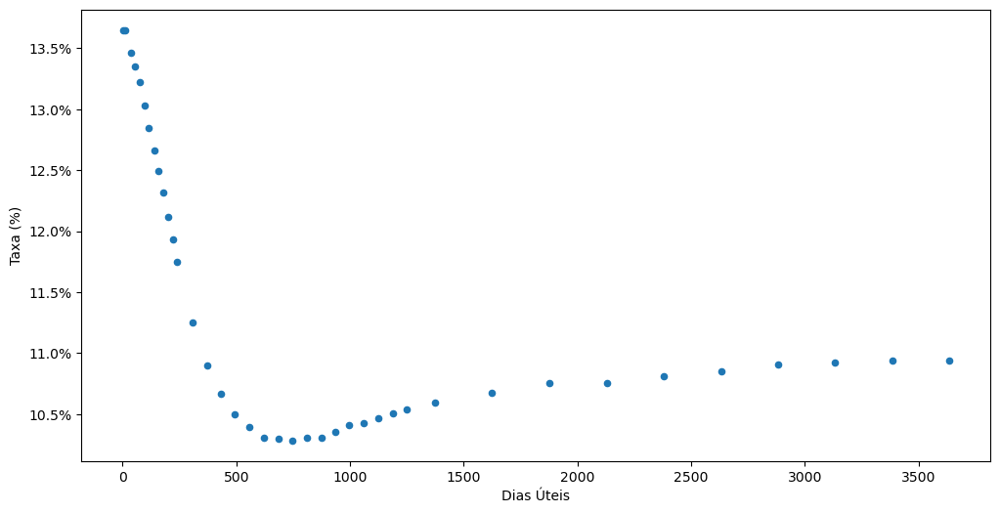
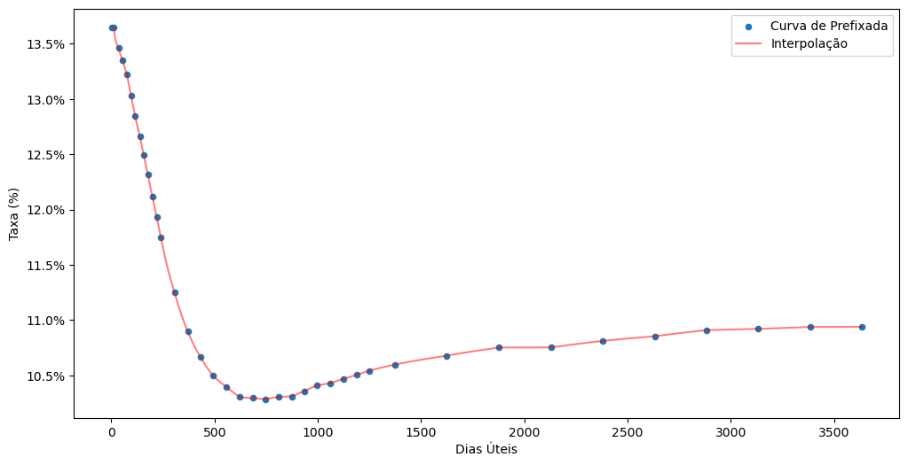
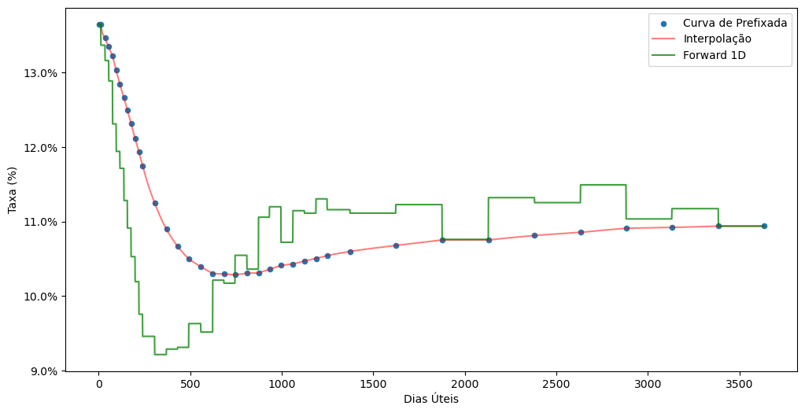

import os
os.environ["BRASA_DATA_PATH"] = "D:\\brasa"
import brasa
import pyarrow.compute as pc
from datetime import datetimeQuantLib é a essência do que é quant, não apenas pela óbvia menção no seu nome, e sim porque está calcada na origem do que chamamos de quantitative finance.
A QuantLib é impressionante pelos seus superlativos, é uma biblioteca gigante, mantida por décadas e com centenas de colaboradores. Continua evoluindo como um projeto de código aberto e com uma comunidade engajada.
A QuantLib é uma grande biblioteca de pricing de ativos finaneiros, e com uma quantidade brutal de instrumentos financeiros associada uma grande quantidade de insumos para os cálculos dos preços, torna a implementação da biblioteca um esforço gigantesco. Por exemplo, para calcular o preço de uma opção de dólar (das que são negociadas na B3) temos como insumos: cotação do dólar, preço de strike da opção, prazo até o vencimento, taxas de juros locais, taxas de juros estrangeira, volatilidade implícitas. Para obter as taxas de juros, precisamos de uma estrutura a termo de juros que é formada por contratos futuros negociados na B3. As volatilidades implícitas são obtidas a partir de uma superfície de volatilidade que é construída de um conjunto de opções, também negociadas na B3. Os juros estrangeiros vão na mesma toada, ou seja, fazer isso de forma estruturada onde os insumos são vinculados a toda cadeia de dependência de instrumentos financeiros e fatores de risco, é bastante complicado. Sem mencionar todas as peculiaridades de cada mercado e seus produtos, como regimes de taxa e regras de contagem de dias, apenas para citar alguns exemplos.
Infelizmente há muito pouco conteúdo sobre a QuantLib aplicado a instrumentos financeiros negociados no Brasil. Vamos tentar reduzir este gap começando com a criação da curva de juros nominais do Brasil, a estrutura a termo de taxas de juros prefixados.
Obtendo os Dados
Vamos começar obtendo os dados da curva de juros nominais, a curva PRE, curva de juros prefixados obtida dos contratos futuros de taxa DI negociados na B3. Para isso vou utilizar a base de dados do projeto brasa, projeto no qual venho trabalhando recentemente. O projeto brasa organiza dados de diversas fontes do mercado financeiro brasileiro e disponibiliza datasets com os dados previamente manipulados. Este projeto é muito semelhante ao projeto rb3, com a diferença que ele gera um data lake com dados do mercado financeiro local.
O projeto brasa organiza os dados em um conjunto de datasets que são obtidos através da função brasa.get_dataset. Esta função retorna um objeto Dataset do projeto arrow, que pode ser entendido como uma referência para os dados, uma vez que não traz os dados para a memória.
Vamos utilizar o dataset b3-curves-di1 que contém as curvas de juros prefixados.
curve = (brasa
.get_dataset("b3-curves-di1")
.filter(pc.field("refdate") == datetime(2023, 7, 14))
.to_table()
.to_pandas())
import matplotlib.ticker as mticker
ax = curve.plot.scatter(x="business_days", y="adjusted_tax", figsize=(12, 6))
ax.set_xlabel("Dias Úteis")
ax.set_ylabel("Taxa (%)")
ax.yaxis.set_major_formatter(mticker.PercentFormatter(xmax=1.0, decimals=1));
Usando a QuantLib
Obtida a curva prefixada, com os seus vértices e taxas, agora vamos utilizar estes dados para criar objetos de curva da QuantLib.
Começamos carregando a QuantLib e associando-a ao prefixo ql. Tudo o que precisamos será acessado diretamente deste módulo.
import QuantLib as ql
today = ql.Date().from_date(datetime(2023, 7, 14))
ql.Settings.instance().evaluationDate = today
print(ql.Settings.instance().evaluationDate)July 14th, 2023A primeira coisa a fazer ao utilizar a QuantLib é definir a evaluationDate. Esta é a data de avaliação, ou a data de marcação a mercado, ou a data de referência para a criação da curva, como queira. Como obtivemos a curva para o dia 14/julho/2023, vamos definir esta data como a evaluationDate.
A QuantLib tem o seu próprio objeto de data, ql.Date, e utilizei o método ql.Date.from_date para criar uma data a partir de um objeto datetime do Python.
DiscountCurve
A curva mais simples de ser criada na QuantLib é a ql.DiscountCurve. Essa curva é criada a partir dos fatores de desconto, discount factors, que são independentes do regime de capitalização das taxas. Em nosso caso, o regime de capitalização das taxas é o composto, com contagem de dias úteis, seguindo o calendário de mercado do Brasil (calendário ANBIMA) e com ano de 252 dias.
O fator de desconto é um invariante, de forma que o fator de desconto entre duas datas é sempre o mesmo, independente do regime de capitalização, da regra de contagem de dias e do calendário adotados. Por este motivo que a ql.DiscountCurve é a curva mais simples de ser criada na QuantLib.
Para criar a ql.DiscountCurve é necessário obter o fator de desconto para cada uma das datas referentes aos vértices da curva. Para isso vamos criar um calendário de mercado do Brasil e obter as datas referentes aos vértices da curva, que estão em dias úteis. Adicionalmente, vamos calcular os fatores de desconto para cada um dos vértices. Após a criação das datas e dos fatores de desconto, criamos o objeto com a regra de contagem de dias, que é necessário para a curva, pois além das datas a curva também trabalha com prazos para retornar dados, e por isso precisa da regra de contagem de dias para saber como converter prazos em datas e vice-versa.
calendar = ql.Brazil(ql.Brazil.Settlement)
data = [
(calendar.advance(today, d, ql.Days, ql.Following), (1 + r) ** (-d/252))
for d, r in zip(curve["business_days"], curve["adjusted_tax"])
]
data.insert(0, (today, 1))
dates, dfs = zip(*data)
dayCounter = ql.Business252(calendar)
curve0 = ql.DiscountCurve(dates, dfs, dayCounter)Criamos o objeto curve0 com a curva. Note que inserimos um primeiro vértice na curva, referente a data de hoje (data de avaliação) com fator de desconto igual a 1. Isso é necessário, a ql.DiscountCurve exige isso.
Os vértices da curva podem ser obtidos com o método nodes, que retorna um conjuto de tuplas com data e fator de desconto.
curve0.nodes()[:5]((Date(14,7,2023), 1.0),
(Date(17,7,2023), 0.9994923774382742),
(Date(1,8,2023), 0.9939259),
(Date(1,9,2023), 0.9826092000000001),
(Date(2,10,2023), 0.9730136999999999))A curva possui diversos métodos de interesse para se obter taxas e fatores de desconto. O método discount retorna o fator de desconto e ele pode receber tanto a data futura, como o prazo, em anos, da data de avaliação até a data futura.
Por exemplo, vamos obter o fator para a data de 1/set/2023 utilizando a data e o prazo até esta data.
biz_days = calendar.businessDaysBetween(today, ql.Date(1,9,2023))
print(curve0.discount(biz_days/252))
print(curve0.discount(ql.Date(1,9,2023)))0.9826092000000001
0.9826092000000001Como esta data também compõe a curva, ela é o quarto nó da curva, podemos verificar que os valores retornados são iguais ao nó da curva. Apenas um sanity check.
Contudo, podemos obter o fator de desconto para qualquer data e prazo, inclusive extrapolando o último vértice da curva. Quando o prazo solicitado não for equivalente aos vértices da curva, a curva é interpolada, utilizando a interpolação Log-Linear, linear nos logaritimos dos fatores de desconto. Essa interpolação é equivalente a interpolação flat-forward, também conhecida como exponencial, utilizada para curvas de juros compostos e dias úteis no Brasil.
Como exemplo vamos obter o fator para a data de 12/jul/2023.
fwd_date = ql.Date().from_date(datetime(2024, 7, 12))
biz_days = calendar.businessDaysBetween(today, fwd_date)
print(curve0.discount(biz_days/252))
print(curve0.discount(fwd_date))0.8967097482832732
0.8967097482832732O fator de desconto é muito útil no apreçamento de ativos, contudo, o que me interessa aqui é obter as taxas de juros da curva. As curvas são visualizadas em taxas e não em fatores.
Para obter as taxas de juros da curva, utilizamos o método zeroRate, que recebe o prazo em anos até a taxa e o regime de capitalização.
print(curve0.zeroRate(biz_days/252, ql.Compounded))11.665385 % Business/252(Brazil) Annual compoundingA taxa retornada é um objeto que contém frequência Annual, regime de capitalização compounding (juros compostos), regra de contage de dias Business/252 e calendário Brazil. O valor da taxa é obtido com o método rate do objeto de taxa de juro retornado.
Vamos iterar em diversos prazos, começando em 1 dia até o último vértice da curva e obter as taxas de juros para cada prazo e construir uma curva com estes dados, essa é a curva interpolada. Depois, colocamos essa curva em um gráfico junto com a curva original.
import pandas as pd
i_curve = pd.DataFrame({
"days": list(range(1, curve["business_days"].max())),
"rates": [curve0.zeroRate(i/252, ql.Compounded).rate()
for i in range(1, curve["business_days"].max())],
})
ax = curve.plot.scatter(x="business_days", y="adjusted_tax", figsize=(12, 6),
label="Curva de Prefixada")
i_curve.plot(x="days", y="rates", c="red", alpha=0.5, ax=ax, label="Interpolação")
ax.set_xlabel("Dias Úteis")
ax.set_ylabel("Taxa (%)")
ax.yaxis.set_major_formatter(mticker.PercentFormatter(xmax=1.0, decimals=1));
Uma outra análise que gosto de fazer é observar a curva de juros a termo de 1 dia. É a expectativa das taxas DI futuras implícitas na curva.
O objeto de curva tem o método forwardRate que recebe um prazo inicial e um prazo final para o cálculo da taxa a termo entre estes 2 prazos. Dessa forma, vamos iterar em todos os prazos da curva obtendo a taxa a termo de 1 dia. Na sequência vamos adicionar a estrutura a termo com estas taxas no gráfico com as curvas de juros.
f_curve = pd.DataFrame({
"days": list(range(1, curve["business_days"].max())),
"rates": [curve0.forwardRate(i/252, (i+1)/252, ql.Compounded).rate()
for i in list(range(1, curve["business_days"].max()))],
})
ax = curve.plot.scatter(x="business_days", y="adjusted_tax", figsize=(12, 6),
label="Curva de Prefixada")
i_curve.plot(x="days", y="rates", c="red", alpha=0.5, ax=ax, label="Interpolação")
f_curve.plot(x="days", y="rates", c="green", alpha=0.75, ax=ax, label="Forward 1D")
ax.set_xlabel("Dias Úteis")
ax.set_ylabel("Taxa (%)")
ax.yaxis.set_major_formatter(mticker.PercentFormatter(xmax=1.0, decimals=1));
Dado o cenário atual, nota-se que a expectativa implícita na curva é de que a taxa DI reduza até a faixa de 9% em 1 ano e retorne ao patamar de 10% após 2 anos.
Vamos ficando por aqui. Vimos a criação de uma estrutura a termo com a QuantLib, como interpolar taxas de juros a vista e taxas de juros a termo.